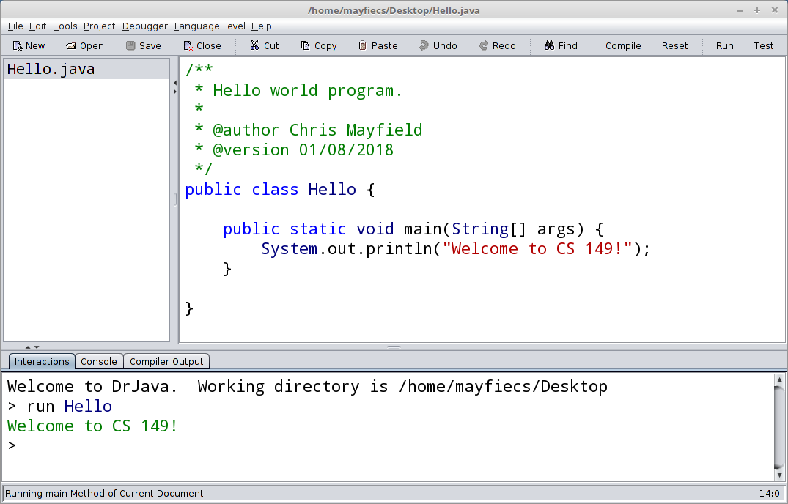
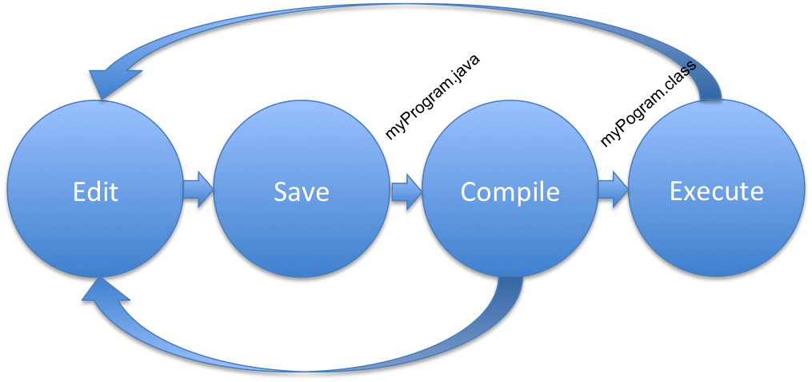

James Madison University, Spring 2018 Semester
Lab01: Building a Java program
Background
Welcome to your first programming lab in Java! Today's emphasis is on the development cycle of edit, save, compile, and run. We will also experiment with different kinds of compiler errors, learn to recognize when an error occurs, what information is conveyed in the error message, where the error occurred, and how to resolve it.
Objectives
Use an IDE (Integrated Development Environment).
Edit, save, compile, and run a simple Java program.
Recognize and correct syntax errors in a Java program.
Key Terms
- source file
- the Java program as written by the programmer
- class file
- the executable program produced by the compiler
- compile
- process of checking syntax and making a class file
- syntax error
- mistake in the source code that violates the language
- logic error
- mistake in the program that causes incorrect behavior
- execute
- the process of running a program on a computer
Part 1: Java Development Cycle
DrJava is a text editor much like gedit or Notepad. But it does a lot more! First, it highlights key words as you type them. It also supports indenting of sections of the code. When you want to compile your code, there is a tool within DrJava to do so. And when you want to execute and test your program, it will do that too.
-
Open DrJava and click "File –> New Java Class" from the menu. Name the class Hello (note the capital H) and check the box to include a main method. Save the file on your Desktop or other preferred location.
-
Type the code in the picture on the upper right. Change the @author to your name and @version to today's date. Pay attention to all spelling, punctuation, and indentation.
NOTE: Java is case sensitive ("System" is different than "system"). Using the wrong case anywhere will cause an error.
-
Compile your Java program (click the compile button on the toolbar).
If it compiles successfully you will get a message: Compilation completed. If you have other messages indicating errors, check your typing very carefully. Your error message will give you the line number of the first place the compiler was "confused" by what you typed.
Upon successful compilation, examine the directory (use the file browser) in which you placed your Hello.java file and you should see a Hello.class file.
-
Execute your program from DrJava. (Click the run button on the toolbar.) Under the Interactions tab, you should see the message "Welcome to CS 149!" appear in green. If not, please see the instructor before proceeding.
You have just completed the "edit, save, compile, execute" cycle. Each time you change and save your program, you will need to recompile the source file to see the changes reflected in the executed program.
Part 2: Syntax Errors
Download the  Lab01.txt
worksheet and open/edit the file as plain text.
Lab01.txt
worksheet and open/edit the file as plain text.
This part of the lab will give you some practice in reading and interpreting syntax errors. As you make each error, pay particular attention to the message produced, and in some cases, a single error will cascade several other errors. Record the answers to the following questions in your lab worksheet.
-
Class name different from file name.
Delete the beginning 'H' from the name of the class (so the first non-comment line is
public class ello) and save the program.
(Question 1) What happens when you try to save it?Now compile your program. Keep the
public class ellomistake in the code.
(Question 2) What error message do you get during the compile? -
Interpreting the error message.
All compiler messages will begin with the name of the source file (Hello.java) and the line number in that file that contains the error.
(Question 3) What line number was your error on? -
Misspelling inside a string literal.
Correct the mistake above, save, and compile. Next, delete one letter 'l' from the Welcome in the message to be printed (inside the quotation marks). Save the program and recompile it.
(Question 4) Why is there no error message?Now run the program, and review the "key terms" at the top of this lab.
(Question 5) What type of error just occurred? -
No ending quote mark for a string literal.
Correct the spelling in the string, then delete the ending quotation mark enclosing the "Welcome to CS 149!" Save the program and recompile it.
(Question 6) What error message(s) do you get? -
No beginning quote mark for a string literal.
Put the ending quotation mark back, then take out the beginning one. Save and recompile.
(Question 7) What was different about the errors this time? -
No semicolon after a statement.
Put the missing quote back, and remove the semicolon at the end of the line that prints the message. Save the program and recompile it.
(Question 8) What error message(s) do you get?
A good practice to follow when you have multiple errors is to focus on the first error, correct it, then recompile. Do not try to figure out all of the errors at once!
Part 3: Declaration and Assignment
Now we will make
variables using the Java language. All variables must be declared prior to their
first use in the program. A declaration is an abstract data type, followed by an
identifier, followed by a semi-colon. For example int sum; declares
the variable sum to be an int (short for integer). Add the following line to the
program prior to the System.out.println statement.
String message;
This statement declares message to be a variable container that can hold Strings. Note that String must be capitalized. Skip one line (make one line of white space) and add an assignment statement. This statement will put the String literal "Hello, World" into the container called message.
message = "Hello, World";
You may use a different string if you prefer for your message. Finally, make this change to print the contents of the message variable:
System.out.println(message);
Save and recompile your program. Then run it to make sure that the message prints in the way that you want it to.
(Question 9) Why does message not have quotes around it?Part 4: Manipulating Output
System.out.println sends a string to standard output and adds a newline character at the end. What happens if we use System.out.print instead? This section will have you experiment with the output.
-
In your program, add in a second String variable named message2. Assign to it the value "I'm happy to be a programmer."
-
Change your println to use print instead:
System.out.print(...);Then add another println statement on the next line:System.out.println(message2);Compile and run your program.
(Question 10) How many lines of output do you get? -
After the word "World" in message, put in the code
\n. This is one of the escape characters in Java. Recompile and run your program.
(Question 11) How many lines of output do you get? -
In Java,
\nis the newline character and can be used to force a new line wherever we want it. In this case, it is doing the job that the println did before, adding a newline after the last character. -
Finally, remove the second println command which is printing the second line of the message. Change the other print command to read:
System.out.println(message + message2);Recompile and run the program.
(Question 12) What output do you get?
Submit both your completed Lab01.txt and Hello.java via
 canvas.jmu.edu by the end of the day.
canvas.jmu.edu by the end of the day.
Part 5: Canvas Settings
After submitting the lab, take a few minutes to complete your Canvas account setup:
In Canvas, click the "Account" icon on the upper left, then click "Settings".
If you haven't done so already, please set up a profile picture of your choice.
If you'd like to receive text messages from Canvas, click "+ Contact Method" on the right.
Click "Notifications" on the left sidebar and verify what emails/texts you want to receive.
Steps 16-19 are required for the lab. You will lose points if your profile picture is still a ghost.
Optional Challenge
For those who finish before the end of the lab period, I have an extra challenge for you. Write a program named Miles.java that converts miles to kilometers (i.e., 1 mile = 1.60934 km).